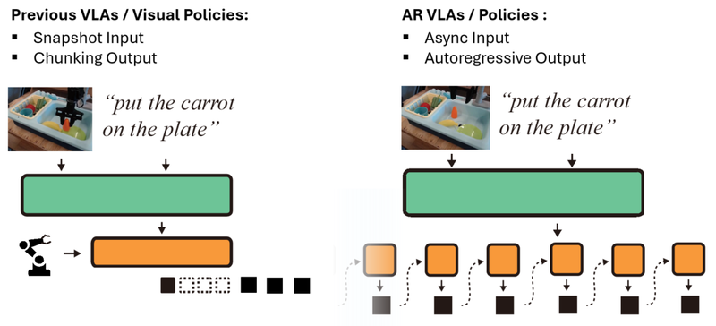

AR-VLA: True Autoregressive Action Expert for Vision-Language-Action Models
Yutong Hu, Jan-Nico Zaech, Nikolay Nikolov, Yuanqi Yao, Sombit Dey, Giuliano Albanese, Renaud Detry, Luc Van Gool, Danda Pani Paudel
Robotics: Science and Systems (RSS), 2026
project page / arXiv
Yutong Hu, Jan-Nico Zaech, Nikolay Nikolov, Yuanqi Yao, Sombit Dey, Giuliano Albanese, Renaud Detry, Luc Van Gool, Danda Pani Paudel
Robotics: Science and Systems (RSS), 2026
project page / arXiv
A standalone autoregressive action expert that generates actions as a continuous causal sequence with long-lived memory, bridging fast low-level control and slow vision-language reasoning.